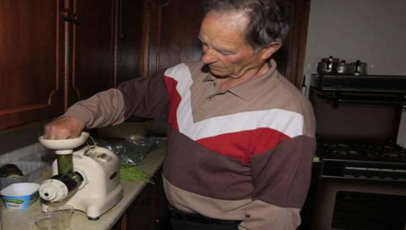

Ημερομηνία:
«Ετοιμοθάνατος» νίκησε τον καρκίνο με σιταρόχορτο!
Συντάκτης: ΙΝΣΤΙΤΟΥΤΟ ANN WIGMORE

Όταν οι γιατροί είπαν στον 74χρονο Danny McDonald Dunaff από την Ιρλανδία ότι είχε μια πολύ σοβαρής μορφής καρκίνο του στομάχου που θα μπορούσε να τον σκοτώσει μέσα σε τρεις μήνες, εκείνος αποφάσισε να αγνοήσει τις συμβουλές τους, να υποβληθεί σε τοξικές χημειοθεραπείες, και να προσεγγίσει το πρόβλημά του διαμέσου της διατροφής.
Τέσσερα χρόνια αργότερα, ο Ντάνι τα πάει θαυμάσια χάρη στην καθημερινή κατανάλωση χυμού σιταρόχορτου, μια θρεπτική υπερτροφή που έχει εκπληκτικά οφέλη στην υγεία.
Σύμφωνα με την Sunday World, o Ντάνι έλαβε γνώση της κατάστασής του όταν βρέθηκε σε κρίση έλκους. Αφού έσπευσε στο νοσοκομείο από την αγροικία στην οποία ζει, οι γιατροί αγωνίζονταν να σταματήσουν την εσωτερική του αιμορραγία ώσπου διαπίστωσαν ότι είχε προσβληθεί από μια σοβαρή μορφή καρκίνου του στομάχου που είχε εξαπλωθεί σε όλο το σώμα του. Τον προειδοποίησαν ότι ο μόνος τρόπος να απαλλαγεί από αυτό, κατά τη γνώμη τους, ήταν να υποβληθεί σε συμβατική χημειοθεραπεία.
Ο Ντάνι όμως αποφάσισε να ερευνήσει κι άλλους τρόπους θεραπείας. Αργότερα ανακοίνωσε στους θεράποντες γιατρούς του, προς απογοήτευσή τους, ότι θα ακολουθήσει μια σπιτική θεραπεία που περιλαμβάνει σιταρόχορτο. Οι γιατροί τον προειδοποίησαν ότι θα «πέθαινε σε λίγες εβδομάδες» εάν δεν ακολουθούσε τη συμβουλή τους αλλά ο Ντάνι ήταν αποφασισμένος. «Είπα στους γιατρούς ότι δεν ήμουν έτοιμος να υποβληθώ στην θεραπεία που μου είχαν προτείνει» και όπως αποκάλυψε στην Sunday World «Ήξερα ότι αυτή η θεραπεία θα με σκότωνε».
Όμως η απόφαση αυτή του Ντάνι δεν ήταν βεβιασμένη. Ο Ντάνι είχε ακούσει από έναν φίλο του για τις καταπληκτικές θεραπευτικές ικανότητες του σιταρόχορτου. Με την πάροδο του χρόνου, ο Ντάνι είχε πειστεί ότι το σιταρόχορτο μπορεί να θεραπεύσει πληθώρα ασθενειών περιλαμβανομένου του καρκίνου.
«Δεν ήξερα τι να περιμένω αλλά ήμουν αποφασισμένος να το δοκιμάσω» θυμάται ο Ντάνι. «Εντός επτά ημερών η αίσθηση καύσου που είχα στο πλευρό μου είχε φύγει και είχα αρχίσει να αισθάνομαι πολύ καλύτερα. Σταμάτησα να παίρνω τα χάπια που μου είχαν συνταγογραφηθεί και δεν πήρα ούτε ένα από τότε. Ένα μήνα αργότερα, ο πόνος είχε εξαλειφθεί πλήρως και ήξερα ότι θεραπευόμουν. Το σιταρόχορτο έκανε τη δουλειά του.»
Ο Ντάνι όχι μόνο ήταν σε θέση να διακόψει την αγωγή των συνθετικών φαρμάκων που του είχαν συνταγογραφηθεί, αλλά κέρδισε και όλο το βάρος που είχε χάσει λόγω της χρήσης τους για την ασθένειά του. Ξεκίνησε με μία ουγγιά (περίπου 30 γρ.) σιταρόχορτου τη μέρα και σταδιακά έφτασε τις 7 ουγγιές (περίπου 200 γρ.). Ο Ντάνι θεράπευσε αποτελεσματικά τον καρκίνο του και αποτελεί μια ζωντανή απόδειξη της θαυματουργής αναγεννητικής δύναμης του σιταρόχορτου.
«Ξέρω ότι πολλοί γιατροί πιστεύουν ότι το σιταρόχορτο δεν έχει την ικανότητα να σκοτώσει τον καρκίνο, αλλά εγώ είμαι μια ζωντανή απόδειξη ότι το κάνει», προσθέτει. «Κι αν και πολλοί γιατροί δεν θα το παραδεχτούν δημοσίως, σταδιακά πείθονται για τα οφέλη του σιταρόχορτου. Οι άνθρωποι με ρωτούν πως τα κατάφερα και εγώ τους λέω μόνο μια λέξη: σιταρόχορτο».
Φρέσκοκομένο σιταρόχορτο με 39€ ΕΒΔΟΜΑΔΙΑΙΟ ΠΑΚΕΤΟ
ΔΩΡΕΑΝ Αποστολή με Courier σε όλη την Ελλάδα
26510
- 81822 6945 98 98 23
_______________________________________________
Σημαντική Υπενθύμιση
Το πρόγραμμα στο Ινστιτούτο δεν αντικαθιστά συμβουλές ή
θεραπείες του γιατρού σας. Αν και συνεργαζόμαστε πολύ στενά με την φύση πάντα
υπάρχει κάποιο ρίσκο με τις μεθόδους και τις συμβουλές που χρησιμοποιούνται στο
Ινστιτούτο. Το Ινστιτούτο Ανν Γουγκμορ Ελλάς δεν είναι υπεύθυνο για
οποιεσδήποτε παρενέργειες ή αποτελέσματα που μπορεί να προκείψουν από τις
προετοιμασίες συνταγών ή τις συμβουλές. Δεν παρέχουμε ιατρική συμβουλή ή δεν
επεμβαίνουμε στις ιατρικές θεραπείες κανενός είδους και δεν παρέχουμε κανενός
είδους θεραπεία. Το Ινστιτούτο δεν παρέχει γιατρούς ή νοσοκόμους στο χώρο αλλά
μπορούμε να ζητήσουμε την επίσκεψη ενός γιατρού στο χώρο μας ή να επισκεφθείτε
ένα υγιεινιστής, φυσιοθεραπευτή γιατρό. Σε περίπτωση έκτακτων περιστατικών
παραπέμπονται στα έκτακτα περιστατικά των εφημερευόντων νοσοκομείων. Αν
αντιμετωπίζετε κάποιο πρόβλημα υγείας παρακαλούμε επικοινωνήστε με τον γιατρό
σας για να εκτιμήσει αν αυτό το Πρόγραμμα αποτοξίνωσης και αλλαγής τρόπου ζωής
είναι κατάλληλο για εσάς. Με την άφιξή σας θα σας ζητηθεί να συμπληρώσετε μία
υπεύθυνη δήλωση ότι το Ινστιτούτο δεν ευθύνεται για καμία παρενέργεια ή
κατάσταση υγείας που μπορεί να προκύψει είτε προϋπήρχε ή παρουσιάστηκε τώρα.
Πρέπει να είστε ικανοί να φροντίζετε τον εαυτό σας ή να συνοδεύεστε. Το
Ινστιτούτο Ανν Γουγκμορ Ελλάς είναι Σχολή και ΟΧΙ Κλινική ή Spa. Οι παρεχόμενες πληροφορίες στο παρόν site έχουν
καθαρά και μόνο πληροφοριακό χαρακτήρα και όχι οδηγίες εφαρμογής τρόπου
ζωντανής διατροφής.
Πηγή: http://sitarohorto.gr